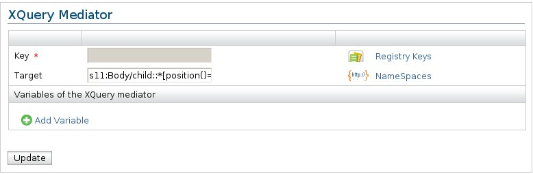
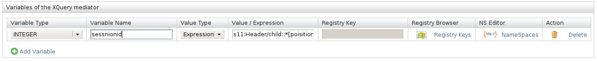

XQuery Mediator
The XQuery mediator can be used to perform an XQuery transformation. The 'key' attribute specifies the XQuery transformation,
and the optional 'target' attribute specifies the node of the message that should be transformed. This defaults to the first
child of the SOAP body of the payload. The 'Variables for the XQuery mediator' define values/expressions that could be bound to the dynamic context
of the XQuery engine in order to access those variables through the XQuery script.

Figure1: XQuery Mediator
-
Key: The key that represent the xquery transformation.
-
Target: (optional) Specify the node of the message that should be transformed using an xpath expression. ( default to the first child of the SOAP body )
The namespace prefixes used in the expression can be defined by clicking the namespaces link in front of the 'Target' input field.
Variables for the XQuery Mediator: Defines values/expressions that could be bound to the dynamic context
of the XQuery engine in order to access those variables through the XQuery script.

Figure1: XQuery Mediator - Adding Variables
You have the following option in a variable.
-
Variable Type: The 'type' of the variable must be a valid type defined by the JSR-000225 (XQJ API).
The supported types are:
- XQItemType.XQBASETYPE_INT->INT
- XQItemType.XQBASETYPE_INTEGER->INTEGER
- XQItemType.XQBASETYPE_BOOLEAN->BOOLEAN
- XQItemType.XQBASETYPE_BYTE->BYTE
- XQItemType.XQBASETYPE_DOUBLE->DOUBLE
- XQItemType.XQBASETYPE_SHORT->SHORT
- XQItemType.XQBASETYPE_LONG->LONG
- XQItemType.XQBASETYPE_FLOAT->FLOAT
- XQItemType.XQBASETYPE_STRING->STRING
- XQItemType.XQITEMKIND_DOCUMENT->DOCUMENT
- XQItemType.XQITEMKIND_DOCUMENT_ELEMENT->DOCUMENT_ELEMENT
- XQItemType.XQITEMKIND_ELEMENT->ELEMENT
-
Variable Name: The name of the variable should correspond to the name of variable declaration in the XQuery script.
-
Value Type: Whether the value of the variable is a static value or an expession.
-
Value/Expression: Static value or the expression.
-
Registry Key: Key, if the value is retrieved from the registry.
-
NSEditor: Defines the namespaces for the prefixes used in the xpath query.
-
Action: Delete the variable.